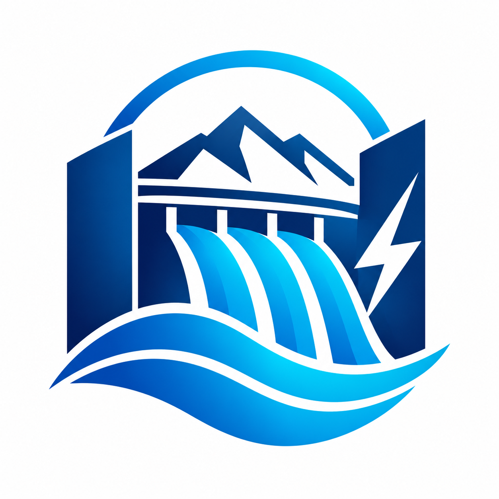

HYDROTEC es una propuesta de empresa dedicada a la generación de energía hidroeléctrica mediante el
aprovechamiento del agua.
Nuestro proyecto busca demostrar cómo el movimiento del agua puede
transformarse en energía eléctrica de una manera eficiente y sostenible.
El propósito del proyecto es mostrar de forma práctica cómo funciona una represa hidroeléctrica y
cómo el agua puede utilizarse para producir energía renovable,
fomentando el cuidado del medio
ambiente
y el uso responsable de los recursos naturales.
La misión de HYDROTEC es generar energía hidroeléctrica de manera sostenible y eficiente, aprovechando
el potencial del agua para contribuir al desarrollo energético y ambiental de la sociedad.
Nos comprometemos a implementar tecnologías innovadoras y prácticas responsables que minimicen el
impacto ambiental, promoviendo el uso de recursos renovables y fomentando la conciencia ecológica en
nuestras comunidades.
La visión de HYDROTEC es ser una empresa líder en la generación de energía hidroeléctrica sostenible,
reconocida por su compromiso con el medio ambiente y su contribución al desarrollo energético de la
sociedad.
Nos esforzamos por innovar constantemente y ofrecer soluciones eficientes que permitan un uso
responsable de los recursos naturales, promoviendo un futuro más limpio y sostenible para todas las
comunidades.
Instagram:@hydrotec_gt